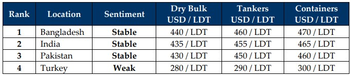

GMS Week 07 – TIT FOR TAT TARIFFS & TANTRUMS!
in Weekly Demolition Reports 17/02/2025

Compounding market uncertainties took center stage with Pres. Trump’s uncalculated tariff wars sending economies rocking this week, unintentionally targeting the U.S. Dollar as the beneficiary to a crisis that is still unfolding, sending it into a tizzy as it declined against nearly all of the major ship recycling destinations, except? You guessed it, Turkey, where it plummeted nearly 0.5% this week, creating an all-time record low. While some of the executed tariffs have taken affect and others are reportedly still in the works, this limbo of a global inflationary explosion that’s seemly lying in wait has even seen oil prices temper further this week, with the barrel falling further on the news that a Trump / Zelenskiy and even Trump / Putin meeting to end the Ukraine war, remains in the works. This saw oil end the week at USD 70.7/barrel as charter rates reflected the unfolding present with the Baltic Index Dry Index reporting another drop early in the week, only to end it a shade higher. None of which, has tempered the supply of tonnage for the ship recycling markets as units remain in play and anchorages earmarked fresh arrival(s) this week as well.
Through it all, the knock-on effects of the tit-for-tat trade wars have certainly been felt across the ship recycling markets as well – perennially in India, where despite PM Modi being in America to visit Pres. Trump and ensure no tariffs were in the works to affect India and ensure the smooth and ongoing cooperation between the nations, the 25% tariffs announced on Chinese steel & aluminum products is already seeing destabilizing effects on the recycling markets, and it remains unsure as to where much of this surplus / excess and resultingly cheaper steel will end up, devastating ship recycling prices as a result of.
Speaking of prices, downward pressure on tabled levels has remained unrelenting since the start of the year and the ongoing and intolerable performances of key fundamentals has continued to push levels down ever since USD 600/Ton was achieved back in January 2024. Flatlining steel plate prices across the board including declining levels from India that have fallen in excess of USD 11/Ton over the course of 2 weeks alone, has done little for prevailing offerings. In fact, over the course of last year, both India and Pakistan were rigorously subjected to the import of cheaper Chinese steel imports that kept undercutting local inventories, resulting in sub-continent steel markets collapsing. Although new duties by both governments to curb the ill effects of this cheaper steel via anti-dumping tariffs were introduced, there remains a great deal of nervousness as to how these latest rounds of tit-for-tat tariffs will end up hitting the ship recycling industry.
As recycling markets have deteriorated by nearly USD 30/LDT over the course of this year already, a drop that looks determined to increase, it has been an unexpectedly gloomier picture for the first 7 weeks of 2025 despite the bullish start to the year that saw numerous LNGs and at least ten Panamax bulkers from the Chinese / Far Eastern markets concluded for a recycling sale. As such, questionably interesting times lie ahead, all of which could see a landmark year for ship recycling, with yards still in the process of being upgraded to HKC standards in both Bangladesh and Pakistan, ahead of the HKC’s entry into force post June 30th of this year, and Pakistan ending the week with its only delivery of the year.
For Week 7 of 2025, GMS Market Rankings / vessel indications are as below.

📄 Download PDF: Ship-recycling-market-insight-Week-07-02-14-2025-Tit_for_Tat_Tarrifs_and_Tantrums.pdfSource: GMS,Inc. https://www.gmsinc.net/gms_new/index.php/web
 Translate
Translate{kind=link}